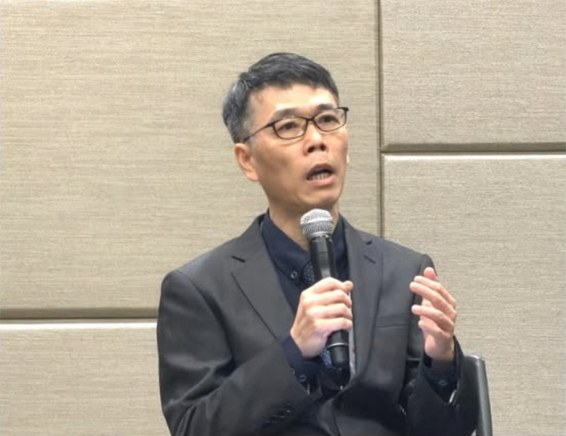
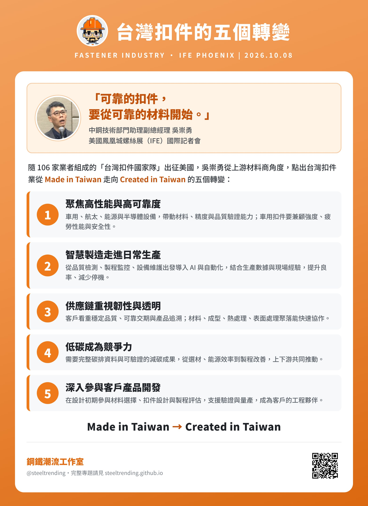
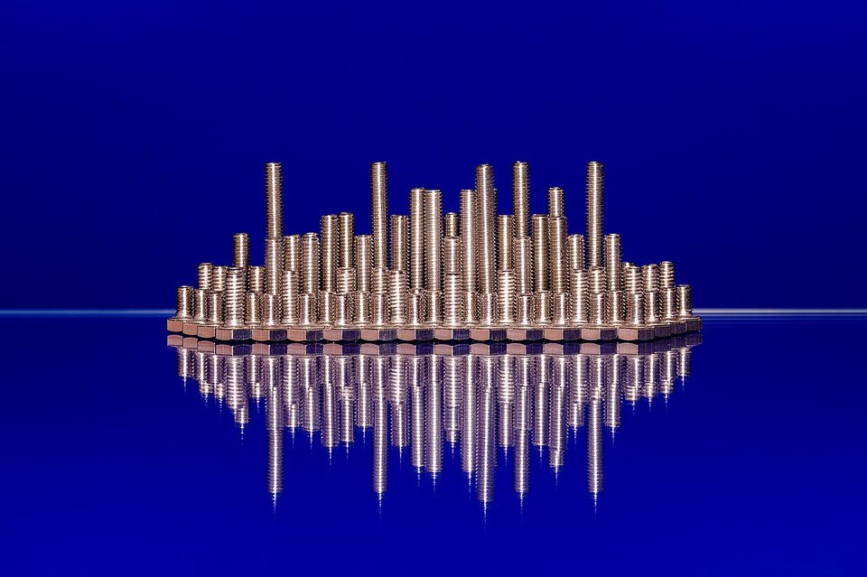

TRADE & POLICY · FASTENERS · IFE 2026
從台灣製造到台灣創造：中鋼在鳳凰城談扣件業的五個轉變
鋼鐵潮流工作室 · 發布 2026.10.08

本期重點
美國鳳凰城螺絲暨機械設備展（International Fastener Expo，IFE）10 月 7 日至 9 日登場，台灣螺絲工業同業公會率 106 家業者組成「台灣扣件國家隊」參展。中鋼技術部門助理副總經理吳崇勇首度隨團出征，在台灣時間 10 月 8 日凌晨的國際記者會上回答美國媒體提問。他說，台灣扣件業要從「Made in Taiwan」走向「Created in Taiwan」，從產品設計、材料選擇到製程開發與量產驗證，提供客戶完整的解決方案。
這番話的背景是台美貿易兩極化的走勢。2025 年台灣對美出口 1,982.7 億美元、年增 78%，美國重回台灣最大出口市場；但扣件屬於美國 232 條款的鋼鐵衍生品，至今仍被課 50% 關稅，今年上半年銷美重量年減 14.8%。AI 伺服器把對美出口推到歷史新高，螺絲卻在關稅牆外找出路。
- 台美貿易：2025 年對美出口占台灣總出口 30.9%，26 年來首度超過中國大陸與香港；今年前 8 月對美出超 1,407 億美元，創同期新高。
- 扣件困境：232 條款關稅 50%，不適用台美協議的 15% 對等關稅。中鋼估今年螺絲出口量只有 110 萬到 120 萬噸，比高峰的 168 萬噸少三成以上。
- 轉型訊號：今年前 8 月扣件平均出口單價每公斤 3.67 美元、年增 5.15%，量減價升，高值化開始反映在數字上。
- 中鋼角色：吳崇勇以上游材料商的角度，點出高性能、智慧製造、供應鏈韌性、低碳與共同開發五個轉變，強調「可靠的扣件，要從可靠的材料開始」。

關鍵數字
台美貿易：AI 撐起的歷史新高
財政部統計，2025 年台灣總出口 6,407.5 億美元、年增 34.9%，其中對美出口 1,982.7 億美元、年增 78.0%，連續第 9 年成長並創新高，占總出口的 30.9%，是近 35 年最高。美國也是 26 年來第一次超越中國大陸與香港，重回台灣最大出口市場。同年自美進口 482 億美元、年增 3.2%，兩相抵減，對美出超約 1,500 億美元。
今年這個趨勢還在延續。8 月對美出口 236.7 億美元、年增 20.7%，是歷年單月第 3 高；前 8 月對美出超已達 1,407 億美元，創同期新高，財政部認為全年對美出超有機會突破 2,000 億美元。帶動成長的是 AI 伺服器、高效能運算與半導體供應鏈，財政部形容台、美、韓在半導體上形成「鐵三角」。
放在這個大數字旁邊，扣件顯得很小：8 月扣件銷美 1.51 億美元，只占當月對美出口約 0.6%。但台灣是全球第三大扣件出口國，國內有超過 1,800 家扣件工廠，南部聚落約占七成產量，高雄扣件業去年產值超過新台幣 900 億元，也牽動上游中鋼的盤元訂單。
扣件：關稅牆內的量縮價升
- 2025/03232 鋼鋁關稅 25% 生效，扣件列入衍生品
- 2025/05新台幣急升，出口報價承壓
- 2025/06鋼鋁關稅調高到 50%
- 2026/01台美協議對等關稅 15%，扣件仍維持 50%
- 2026/04高雄台灣國際扣件展
- 2026/05美方調降汽車零組件等 232 關稅，螺絲扣件未在報導範圍
- 2026/08中鋼估全年螺絲出口 110–120 萬噸
- 2026/10106 家業者赴鳳凰城 IFE
美國關稅措施與參展國內產業動態
扣件輸美的處境，關鍵在 232 條款。美國 2025 年 3 月 12 日起對鋼鋁及衍生品課 25% 關稅，扣件列在其中；6 月再調高到 50%。今年 1 月台美談定 15% 對等關稅，且不與其他關稅疊加，水五金、工具機等業者鬆了一口氣，但扣件屬於 232 條款產品，稅率仍是 50%。5 月美方依雙方備忘錄調整部分 232 關稅，汽車零組件、木材與木製品的合併關稅上限降到 15%，並取消台灣民用航空器零組件的鋼鋁銅衍生品關稅；報導列出的調整範圍沒有提到螺絲扣件。
| 台灣扣件出口 | 期間 | 數值 | 年增減 |
|---|---|---|---|
| 總出口量 | 2026 年 1–4 月 | 約 36.3 萬噸 | 約 −11% |
| 總出口值 | 2026 年 1–4 月 | 約 13.3 億美元 | −4.7% |
| 總出口量 | 2026 年 1–5 月 | 47.2 萬噸 | −12.7% |
| 銷美重量 | 2026 年 1–6 月 | 25.2 萬噸 | −14.8% |
| 銷美單價 | 2026 年 1–6 月 | 3.47 美元/公斤 | +3.6% |
| 單月出口量 | 2026 年 8 月 | 9.72 萬噸 | −6.8% |
| 單月出口值 | 2026 年 8 月 | 3.57 億美元 | −6.9% |
| 單月銷美值 | 2026 年 8 月 | 1.51 億美元 | 月增 2.6% |
各期數據分別來自 Fastener World、Yieh、俊益鋼鐵轉載的業界統計，以及工商時報引述的 STS 統計；8 月銷美值來源未提供年增率。
結果是量明顯萎縮。今年前 5 月扣件出口量年減 12.7%，上半年銷美重量年減 14.8%；美國占台灣扣件出口量的比重仍有 44.6%，是最大市場，但已從過去接近五成往下掉。中鋼業務副總李家丞 8 月底估計，今年台灣螺絲出口量只有 110 萬到 120 萬噸，比高峰時的 168 萬噸少 48 萬到 58 萬噸、衰退超過三成。業者估算，北美的新關稅讓台灣扣件業多出超過 13 億元的稅負壓力；部分專做美國建築與 DIY 通路的工廠，新訂單一度歸零。
但價格是另一個故事。今年前 8 月台灣扣件平均出口單價每公斤 3.67 美元、年增 5.15%，銷往東協、日韓與印度的單價更達 4.63 美元。對照中國大陸銷歐平均單價只有 1.89 美元，台灣在中低階標準品幾乎沒有價格空間，能守住的是車用、航太、高階機械與綠能用的高強度、高精度扣件。量縮價升，正是吳崇勇所說「高值化」的具體樣貌。
吳崇勇點出的五個轉變
記者會上，美國媒體問吳崇勇：台灣業者如何靠高值化扣件的品質優勢擺脫低價競爭？中鋼又如何帶領下游因應？他從上游材料供應商的角度，提出五個他預期會發生的變化：
- 高性能與高可靠度車用、航太、能源與半導體設備帶動材料、精度與品質驗證能力，車用扣件要兼顧強度、疲勞性能與安全性。
- 智慧製造落地從品質檢測、製程監控、設備維護等實際需求出發導入 AI 與自動化，把生產數據和現場經驗結合，提升良率、減少停機。
- 供應鏈韌性與透明客戶更重視穩定品質、可靠交期與產品追溯；台灣材料、成型、熱處理、表面處理聚落能快速協作。
- 低碳成為競爭力需要完整的碳排資料與可驗證的減碳成果，從材料選用、能源效率到製程改善，上下游一起推動。
- 參與客戶產品開發在設計初期就參與材料選擇、扣件設計與製程評估，支援驗證與量產，成為縮短開發時間的工程夥伴。
他的結論是：「可靠的扣件，要從可靠的材料開始。」中鋼會持續結合材料研發與技術服務，與扣件業者及研發單位合作，協助提升加工品質、優化製程並推動減碳。
工程觀點：為什麼材料是高值化的起點
以下是本站依冶金與扣件製程原理所做的解讀，不是吳崇勇的發言內容。
- 扣件幾乎都是冷鍛出來的。 螺栓、螺絲大多由盤元（線材）經抽線、冷間壓造成形，再搓牙、熱處理、表面處理。盤元的成分均勻度、表面缺陷與夾雜物，直接決定冷鍛時會不會開裂，也決定成品的疲勞壽命。台灣扣件業的上游盤元，中鋼是主要供應來源之一。
- 強度等級越高，對鋼材越挑剔。 一般 4.8 級螺絲用低碳鋼就夠；車用常見的 8.8、10.9 級螺栓，要用中碳鋼、含硼鋼或鉻鉬合金鋼，經淬火回火才能達到強度。等級越高，對鋼的潔淨度、脫碳層與氫脆敏感度要求越嚴。
- 減碳可以從省掉一道熱處理開始。 非調質鋼透過合金設計與控制軋延，讓螺栓冷鍛後不經淬火回火就能達到所需強度，省下熱處理的能源與排放。這類材料是上游鋼廠與下游扣件廠共同開發的典型題目，也呼應吳崇勇說的「低碳」與「參與產品開發」。
- 碳足跡已經是出口文件的一部分。 歐盟碳邊境調整機制（CBAM）的鋼鐵產品範圍涵蓋扣件所屬的 HS 7318，2026 年起進入正式期。輸歐扣件要提出可驗證的內含碳排，鋼材的碳排資料必須從上游一路傳到下游，這正是上下游要共同建立的能力。

對台灣鋼鐵業的意涵
- 扣件出口量少三成，盤元需求同步縮水。 扣件幾乎全靠盤元加工，出口量從 168 萬噸高峰降到約 110 萬到 120 萬噸，中鋼與國內線材廠的盤元出貨也跟著承壓。中鋼表示會審慎訂定第四季鋼價，在下游競爭力與原料成本之間取得平衡。
- 高值化對鋼廠是機會。 標準品市場被中國大陸、東南亞以低價拿走，留下來的高強度、車用與航太扣件，需要更高等級、驗證更嚴格的合金線材。鋼廠能賣的是「規格」與「技術服務」，而不只是噸數。
- 關稅短期無解，只能分散市場。 扣件 50% 的 232 關稅沒有隨台美協議下調。業者一邊把美國市場往高階品轉，一邊加碼歐洲與亞洲；8 月對歐盟加英國出口值年增 3.35%，前 8 月銷往東協、日韓與印度的出口值年增 5.87%、單價年增 7.8%。
- 從台灣製造到台灣創造，需要上下游一起走。 106 家業者組團、公會預計與美國扣件經銷商協會（NFDA）簽署首份合作備忘錄，加上中鋼技術主管親自上台回答美國媒體，傳遞的訊息是：台灣賣的不只是螺絲，而是從材料到驗證的整套工程能力。
觀察重點
- 台灣螺絲公會與 NFDA 合作備忘錄的內容與後續採購媒合成果。
- 美方是否在後續協商中，把扣件納入 232 關稅的調降或配額安排。
- 9 月以後扣件出口量的年減幅度能否收斂，以及銷美單價能否維持上升。
- 中鋼第四季盤元與線材盤價，以及歐盟 CBAM 正式期對輸歐扣件的實際成本。
延伸閱讀
資料來源
- 〈中鋼技術部門助理副總吳崇勇 帶領螺絲業從台灣製造走向台灣創造〉（記者楊雅晴隨團報導，經 Facebook 社團「台灣鋼鐵相關產業分享區」轉貼，2026-10-08）
- 台灣扣件國家隊進軍鳳凰城 IFE，106 家業者聯手搶攻美國市場（經濟日報）
- 鳳凰城螺絲展台灣展商展前宣傳（Fastener World 第 219 期）
- Annual External Trade Report in 2025（財政部統計處，2026-02-23）
- 2025 年對美出口比重 30.9%，26 年首見高於中港（科技新報，2026-01-12）
- 8 月出口 824 億美元、出超 223 億美元，雙創單月新高（工商時報，2026-09-09）
- 對美出超創高、對韓入超破紀錄，財部：與台為半導體鐵三角（經濟日報，2026-09-09）
- 美台韓供應鏈呈現「鐵三角」，對美出超全年可望破 2 千億美元（中時新聞網，2026-09-09）
- 台灣螺絲螺帽 4 成出口美國，業者憂競爭國談到更低關稅（公視新聞網，2025-04-08）
- 螺絲扣件關稅維持 50%，仍適用 232 條款衝擊產業（公視新聞網，2026-01-16）
- 彭博：美國對部分台灣產品調整 232 條款關稅（中央社，2026-05-27）
- 三利空籠罩，螺絲扣件陷出口寒冬（工商時報，2026-05-25）
- Taiwan fastener exports, January to April 2026（Fastener World，2026-07-13）
- 台灣扣件出口動能展望報告（Fastener World，2025-06-16）
- US demand drives rebound in Taiwan's fastener exports in May（Yieh，2026-06-16）
- 螺絲上半年銷美 25.2 萬噸，重縮 14.8%（俊益鋼鐵轉載，2026-07-20）
- 扣件業利空出口倒退嚕，螺絲公會籲「活下去」再說（經濟日報，2026-08-31）
- 台灣螺絲扣件轉型策略見效（工商時報，2026-09-18）
- 國際扣件展開幕，陳其邁：高雄扣件業有穩住（聯合報，2026-04-23）
內容僅供產業資訊參考，不構成投資建議。新聞版權屬原出處所有。